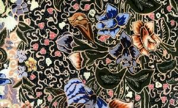
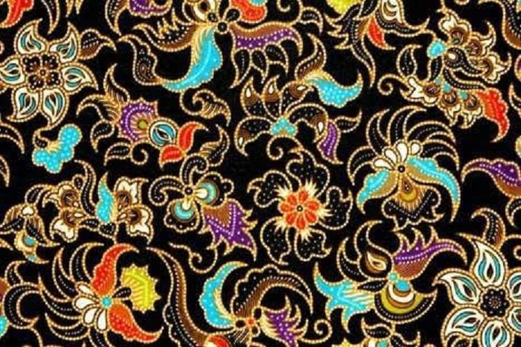

01 — MENGENAL BATIK
Sebuah kain dengan
cerita di setiap motifnya.
Batik Tujuh Rupa merupakan salah satu motif batik yang berkembang di Pekalongan, Jawa Tengah. Batik ini dikenal karena penggunaan berbagai macam motif yang menggambarkan tumbuhan, bunga, dan hewan. Keindahan motifnya membuat Batik Tujuh Rupa memiliki tampilan yang khas dan mudah dikenali. Nama "Tujuh Rupa" dapat dikaitkan dengan keberagaman bentuk dan motif yang digunakan dalam kain batik ini. Keberagaman tersebut juga menunjukkan kreativitas masyarakat dalam menciptakan karya seni yang memiliki nilai budaya.

Ragam Motif
Motif Batik Tujuh Rupa banyak menampilkan bentuk tumbuhan, bunga, dan hewan yang disusun menjadi pola yang indah.

Warisan Budaya
Batik menjadi salah satu karya budaya Indonesia yang terus digunakan dan dikembangkan hingga sekarang.
02 — SEJARAH
Asal Batik Tujuh Rupa
Batik Tujuh Rupa dikenal sebagai salah satu motif batik yang berasal dari Pekalongan, Jawa Tengah. Pekalongan merupakan salah satu daerah di Indonesia yang memiliki tradisi membatik yang kuat. Perkembangan batik di daerah ini juga dipengaruhi oleh berbagai kebudayaan yang berinteraksi dengan masyarakat setempat. Hal tersebut membuat batik Pekalongan memiliki banyak variasi motif dan warna. Batik Tujuh Rupa kemudian menjadi salah satu motif yang dikenal karena penggunaan gambar tumbuhan, bunga, dan hewan yang terlihat pada kainnya.
03 — KEUNIKAN
Motif yang Beragam
Salah satu hal yang membuat Batik Tujuh Rupa menarik adalah keberagaman motifnya. Motif yang digunakan dapat berupa bunga, daun, tumbuhan, kupu-kupu, burung, dan berbagai unsur alam lainnya. Motif tersebut disusun dengan pola yang membuat kain terlihat ramai tetapi tetap memiliki keindahan. Warna yang digunakan juga dapat terlihat cerah dan beragam. Keindahan tersebut membuat Batik Tujuh Rupa dapat digunakan sebagai bahan pakaian maupun berbagai produk lainnya. Setiap motif juga menunjukkan kreativitas pembatik dalam mengolah bentuk-bentuk yang ditemukan di lingkungan sekitar.
04 — PEMBUATAN
Proses Membatik
Membuat batik membutuhkan ketelitian, kesabaran, dan keterampilan. Pada batik tulis, pembatik menggunakan canting untuk membuat garis dan pola menggunakan malam. Setelah pola selesai, kain dapat melalui proses pewarnaan. Bagian kain yang tertutup malam tidak akan menyerap warna sehingga motif tetap terlihat. Proses pewarnaan dan pemberian malam dapat dilakukan beberapa kali jika terdapat banyak warna dalam sebuah motif. Setelah seluruh proses selesai, malam dilepaskan dari kain sehingga pola batik dapat terlihat dengan jelas. Proses yang panjang tersebut membuat setiap kain batik memiliki nilai seni dan keunikan tersendiri.
05 — MAKNA
Keindahan Alam dalam Kain
Motif Batik Tujuh Rupa yang banyak menggunakan unsur tumbuhan dan hewan menunjukkan hubungan manusia dengan alam di sekitarnya. Bentuk bunga, daun, dan hewan diolah menjadi pola yang memiliki nilai estetika. Penggunaan berbagai bentuk tersebut juga menunjukkan bagaimana pembatik dapat menemukan inspirasi dari lingkungan sekitar. Selain menjadi hiasan, motif batik dapat menjadi bagian dari identitas budaya suatu daerah. Karena itu, mengenal motif batik juga berarti mengenal kreativitas dan sejarah masyarakat yang menghasilkannya.
06 — PELESTARIAN
Generasi Muda & Batik
Batik perlu terus dilestarikan agar tetap dikenal oleh generasi berikutnya. Generasi muda dapat membantu melestarikan batik dengan mengenal berbagai motif, menggunakan batik dalam kegiatan tertentu, serta mempelajari proses pembuatannya. Batik juga dapat diperkenalkan melalui media sosial, sekolah, dan berbagai kegiatan kreatif. Dengan mengikuti perkembangan zaman, batik dapat dibuat menjadi pakaian dan produk yang sesuai dengan kehidupan modern tanpa menghilangkan nilai budayanya. Dengan begitu, batik tetap dapat menjadi bagian dari kehidupan masyarakat Indonesia.
07 — KESIMPULAN
Bangga Memakai Batik
Batik Tujuh Rupa merupakan salah satu kekayaan budaya Indonesia yang memiliki keindahan melalui berbagai motif tumbuhan, bunga, dan hewan. Batik ini menunjukkan kreativitas masyarakat Pekalongan dalam menghasilkan karya seni yang memiliki ciri khas. Proses pembuatannya juga membutuhkan ketelitian dan kesabaran sehingga menghasilkan kain yang bernilai. Sebagai generasi muda, kita dapat ikut menjaga keberadaan batik dengan mengenal, menghargai, dan menggunakan batik. Melestarikan batik berarti ikut menjaga salah satu bagian dari identitas dan kekayaan budaya Indonesia.